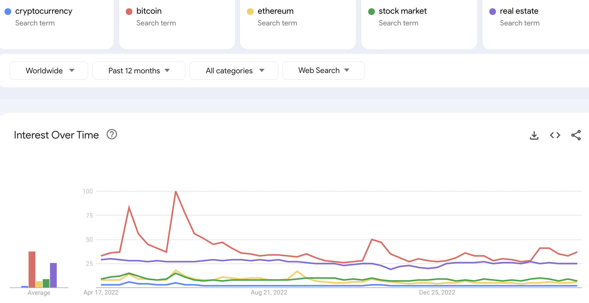
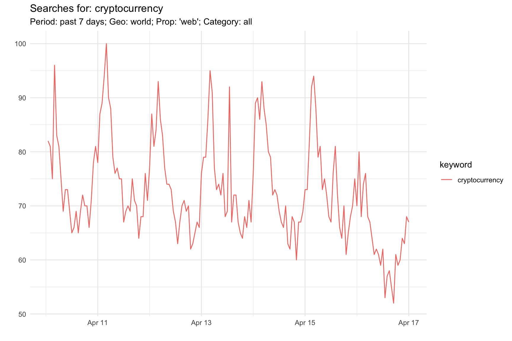
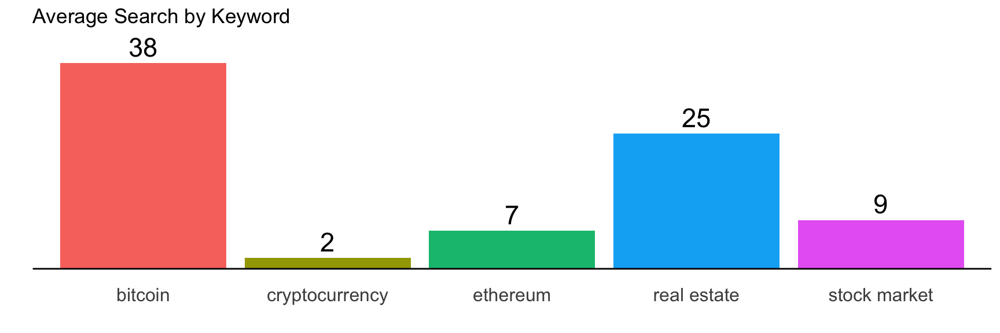
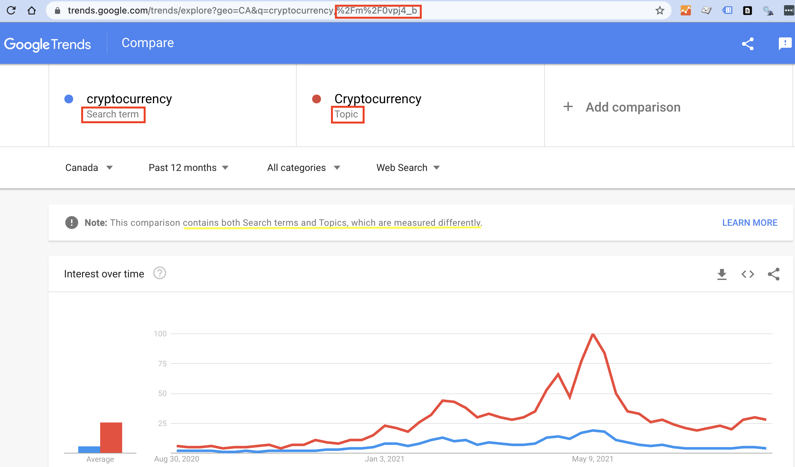

library(gtrendsR) ## package for accessing Google Trends - all you need to get going!Google Trends + R: gtrendsR for Powerful Trend Analytics
R
APIs
Google Trends is a popular tool for all manner of curiousity related to trends in search activity on the Google search engine:
- what topics are trending?
- what are trends for a given search term?
- how does this compare to other terms?
- what related terms are people using?
- how does interest vary by region?
And lots more.
Google Trends has recently passed its 15th birthday, prompting a Google blog post on “15 Tips for Getting the Most Out of Google Trends”. One thing they noted right at the start is that they used Google Trends to identify search queries related to Google Trends in order to prioritize content for a blog post. This is a classic use case - using Google Trends to fuel content decisions for your marketing.
An important point is that Google Trends does not represent or translate to an actual number of searches. This search interest presented is indexed between 0 and 100, where 100 indicates the peak search interest during the particular date range reported on. Everything is relative in Google Trends.
Going Beyond the Interface

(Google Trends example: this query )
Google Trends is a convenient, intuitive interface packed with info that can be great for playing around with, but comes with limitations for tracking trends over time, sharing with others, analyzing more deeply. You can export to a spreadsheet, but this comes with inefficiencies as well: you have to export data for each component in the interface separately and you may lose source information. And if you want to make any adjustments (change date range, geography, category, add terms) you have to go back in there and repeat the process.
Using R to work with Google Trends can provide a more efficient solution if you want to:
- quickly import Google Trends data into R for further analysis.
- grab all the modules from the Google Trends interface at once (interest over time, geo data, related topics, related queries).
- repeat Google Trends reporting to monitor trends over time.
- reproduce the same Google Trends data in future, based on detailed record of your query.
- integrate Google Trends reporting with other datasets or reporting structures.
Google Trends in R
Google does not provide an official API for Google Trends but the gtrendsR R package created by Philippe Massicotte is a major helper in the accessing Google Trends data within R for reporting and analysis. Along with all the benefits of using R to process and analyze data, the gtrendsR package provides some big advantages over using the Google Trends Interface:
- Durability: don’t have to go to the interface and fetch the data each time, you have an on-going reference with source info. You have code that can be referred to, re-used, and shared with others.
- Scalability: can expand on existing queries, going beyond the limit of 5 that are available in the tool.
Google Trends Parameters
Google Trends has a number of parameters that can be used to fine-tune your search: date ranges, geo data, categories, Google properties. These are available via the gtrendsR package, corresponding to the options in the Google Trend online interface. You just have to know how to tap into them:
- Dates:
- “now 1-H”: last hour - by MINUTE
- “now 4-H”: last 4 hrs - by MINUTE
- “now 1-d”: last day - every 8 MINUTES
- “now 7-d”: last 7 days - HOURLY data
- “today 1-m”: last 30 days - DAILY data
- “today 3-m”: last 90 days - DAILY data
- “today 12-m”: last 12 months - WEEKLY data
- “today+5-y”: last 5 yrs (default) - WEEKLY data
- “all” since beginning of Google Trends 2004
- “YYYY-MM-DD YYYY-MM-DD”: custom start / end date - granularity will depend on time spans above
- Geo:
- use gtrendsR::countries to see complete list
- close to 110,000 options, including country / state / city
- code below shows how to filter for countries
- geo=““ for all countries
- Categories:
- use gtrendsR::categories
- over 1,400 categories, with ids that are used in the query
- category = 0 for all categories
- Google properties:
- specify one or more of ‘web’, ‘news’, ‘images’, ‘froogle’, ‘youtube’
- gprop=c(“web”, “youtube”) as example for web and youtube search
Setup - Libraries
There’s basically no setup required - no credentials, etc. Only need to load the gtrendsR package. (I’ve pre-loaded other packages I’m using for general purpose, such as ‘tidyverse’, etc.)
Single term query
Using the gtrendsR package to get Google Trends for a single search term.
## basic search
gt_results <- gtrends(keyword='cryptocurrency',
geo="",
time="now 7-d",
gprop=c("web"),
category=0)The query returns a bundle of 7 data frames with different info, reflecting what is shown in the Google Trends interface:
names(gt_results)[1] "interest_over_time" "interest_by_country" "interest_by_region"
[4] "interest_by_dma" "interest_by_city" "related_topics"
[7] "related_queries" (see screenshot of Google Trends interface for comparison)
Interest over time
The ‘interest_over_time’ data frame is the main data object, with relative search volume for the selected search term, country, period, property, and category.
chart_title <- "Searches for: cryptocurrency"
sub_title <- "Period: past 7 days; Geo: world; Prop: 'web'; Category: all"
## create chart based on search interest over time
gt_results$interest_over_time %>% ggplot(aes(x=date, y=hits, color=keyword))+geom_line()+
labs(title=chart_title, subtitle=sub_title, x="", y="")
Multi-Term Query
The same approach used to query for single terms can be extended to multiple terms. The example below shows how to load up a collection of terms, as well as leveraging other variables for the query.
## create list of multiple search terms
srch_term <- c("cryptocurrency",
"bitcoin",
"ethereum",
"stock market",
"real estate")
period <- "today 12-m"
ctry <- "" ## blank = world; based on world countries ISO code
prop <- c("web")
cat <- 0 ## 0 = all categories
## user-friendly versions of parameters for use in chart titles or other query descriptions
ctry_ <- ifelse(ctry=="","world",ctry)
prop_ <- paste0(prop, collapse=", ")
cat_ <- ifelse(cat==0,"all",cat)
## use gtrendsR to call google trends API
# works: c("cryptocurrency","bitcoin","ethereum","stock market","real estate")
gt_results_multi <- gtrends(keyword=srch_term,
geo=ctry,
time=period,
gprop=prop,
category=cat)
## confirm keywords
#table(gt_results$interest_over_time$keyword)The gt_results object returned is the same as with single query, just has more values for the ‘keyword’ variable in each data frame.
Interest over time
chart_title <- paste0("Search trends: ", paste(srch_term[1:2], collapse=", "), " +")
sub_title <- paste0("Period: ", period, "; Geo: ", ctry_, "; Prop: ", prop_, "; Category: ", cat_)
## create chart based on search interest over time
multi <- gt_results_multi$interest_over_time %>% filter(hits!=0) %>% ggplot(aes(x=date, y=hits, color=keyword))+geom_line()+
scale_y_continuous(expand=expansion(add=c(0,0)))+
labs(title=chart_title, subtitle=sub_title, x="", y="")+
theme(legend.position = "top")
ggplotly(multi)Period: today 12-m (2023-04-16); Geo: world; Prop: web; Category: all
Very similar results to chart shown at the top. Average search index for these keywords over this period also the same as shown in Google Trends interface.
gt_results_multi$interest_over_time %>% filter(hits!=0) %>% group_by(keyword) %>%
summarize(avg=round(mean(hits))) %>%
ggplot(aes(x=keyword, y=avg, label=avg, fill=keyword))+
geom_col()+
#geom_col(fill='navyblue')+
geom_hline(yintercept = 0)+
geom_text(size=6, nudge_y = 3)+
labs(title="Average Search by Keyword", x="",y="")+
theme(axis.text.y = element_blank(),
axis.text.x = element_text(size=12),
panel.grid = element_blank(),
legend.position = "none"
)
As noted, there is the same limitation as the interface of maximum five terms at a time. Of course, one of the beauties of doing thing programmatically is that provides opportunities for combining queries to go beyond five. For that, you need to make sure there is a common term in each queries to calculate the relative values. This is a topic for another blog post.
Search Terms vs Search ‘Topics’
Tip #3 in “15 Tips for Getting the Most Out of Google Trends” mentions the importance of choosing search ‘topics’ when available for a given search term.
Using a topic version of the term has benefits, but also complications for programmatic access:
- you need to go to Google Trends to check if a topic is available (it may also be called something different than ‘topic’, like ‘currency’ for the term ‘Bitcoin’).
- the topic term is an indecipherable code, as circled in the URL in the browser bar above.
- comparisons may be skewed if mixing terms and topics.
